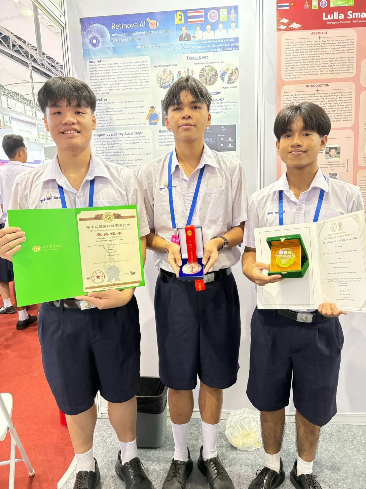
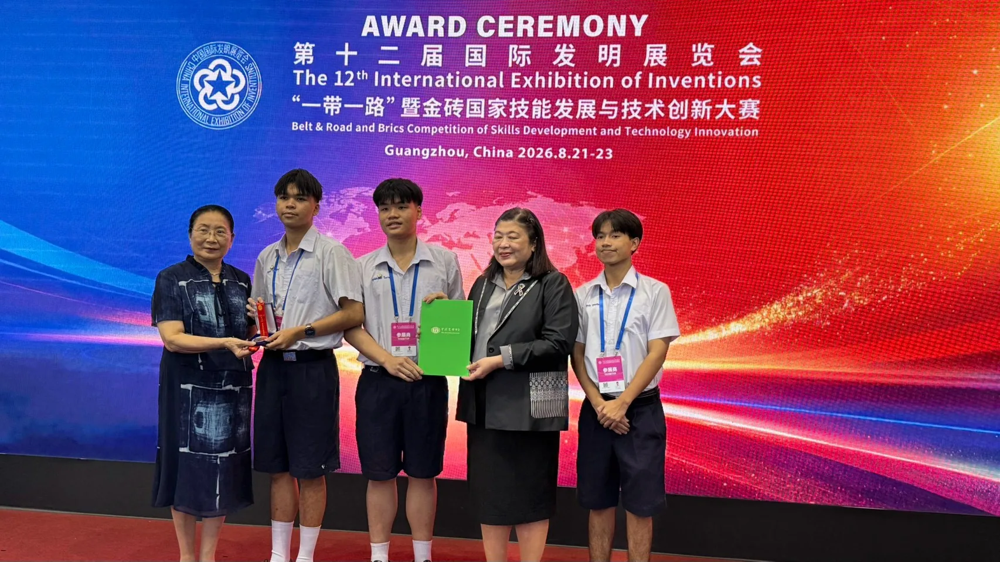
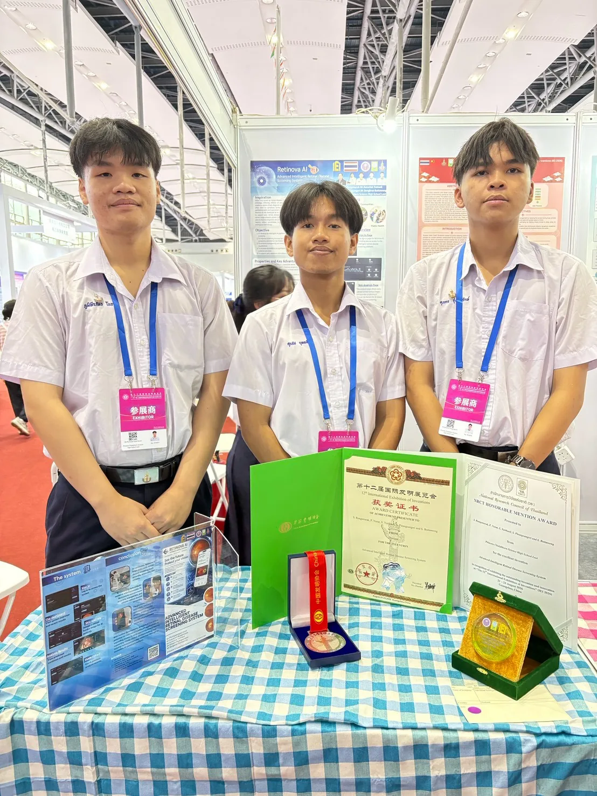
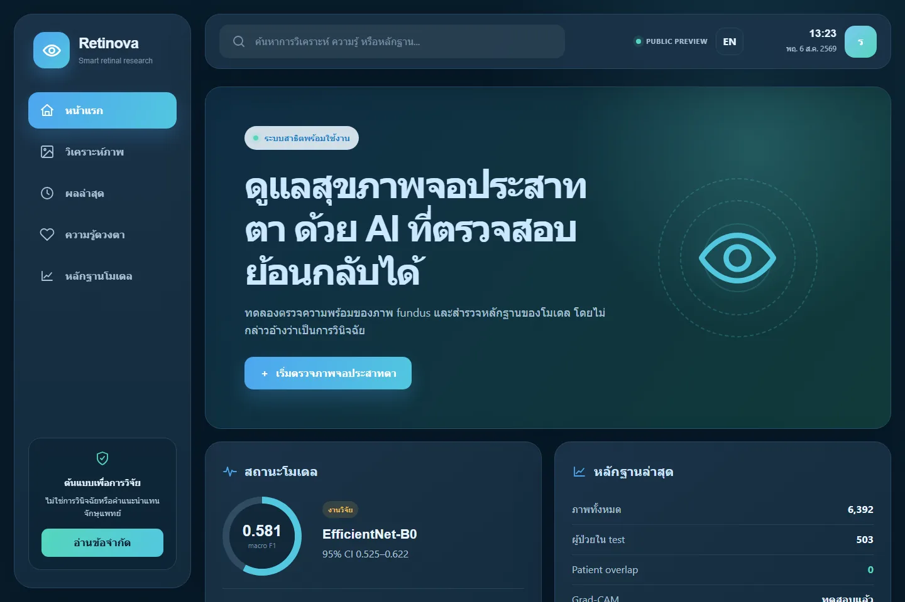

PROJECT 02 / COMPUTER VISION
Retinova AI
AI สำรวจภาพจอประสาทตาและการสื่อสารผลอย่างรับผิดชอบ
- ROLE
- TEAM PROJECT / SYSTEM BUILDER
- STATUS
- INTERNATIONAL EXHIBITION / AWARDED
- YEAR
- 2026
- FIELD
- COMPUTER VISION

ต้นแบบ AI วิเคราะห์ภาพ retinal fundus พร้อม Grad-CAM และการสื่อสารข้อจำกัด นำเสนอในงาน IEI 2026 ประเทศจีน และได้รับ NRCT Honorable Mention Award
โครงการนี้เป็นการศึกษา/ต้นแบบและไม่ได้ใช้เพื่อวินิจฉัยโรค การตัดสินใจทางการแพทย์ต้องอยู่กับบุคลากรที่มีคุณสมบัติเหมาะสม
CONTEXT / PROBLEM
ปัญหาที่เลือกทำ
ระบบคัดกรองภาพจอประสาทตาสามารถช่วยจัดลำดับภาพที่ควรได้รับการตรวจต่อ แต่ความเสี่ยงสำคัญคือผลลัพธ์ที่ผู้ใช้ตีความเกินจริง VisionCare จึงให้ความสำคัญกับทั้งโมเดล และข้อความ/ภาพที่ใช้สื่อสารข้อจำกัด
OWNERSHIP / CONTRIBUTION
ส่วนที่ผมรับผิดชอบ
ร่วมพัฒนาโครงการ โดยทำงานกับ pipeline Computer Vision, Grad-CAM, เว็บสาธิต และการเตรียมระบบสำหรับนำเสนอร่วมกับทีม
- 01ศึกษา workflow ของภาพ retinal fundus และโจทย์ diabetic retinopathy
- 02วางโครง pipeline สำหรับการจำแนกและการอธิบายผล
- 03ออกแบบหน้าจอผลลัพธ์ที่แยกคำแนะนำออกจากการวินิจฉัย
- 04เตรียมเว็บสาธิต หลักฐานทางเทคนิค และการนำเสนอผลงานในเวทีนานาชาติ
SYSTEM / PROCESS
ระบบและกระบวนการ
- 01FRAME
กำหนดระบบเป็นเครื่องมือช่วยคัดกรองและเรียนรู้ ไม่ใช่เครื่องวินิจฉัย
- 02PREPARE
สำรวจการปรับภาพและความแตกต่างของคุณภาพภาพนำเข้า
- 03MODEL
ทดลองโมเดลจำแนกและติดตามข้อผิดพลาดแยกตามกรณี
- 04EXPLAIN
ใช้ Grad-CAM เพื่อดูว่าบริเวณที่โมเดลสนใจสอดคล้องกับภาพหรือไม่
VALIDATION / WHAT THE EVIDENCE SAYS
สิ่งที่ยืนยันได้ในตอนนี้
เอกสารและภาพงานยืนยันการนำเสนอ Advanced Intelligent Retinal Disease Screening System ใน The 12th International Exhibition of Inventions (IEI 2026) เมืองกว่างโจว ประเทศจีน และการได้รับ NRCT Honorable Mention Award จากสำนักงานการวิจัยแห่งชาติ (วช.) ส่วนระบบ AI ยังคงเป็นต้นแบบวิจัย ไม่ใช่อุปกรณ์วินิจฉัย
EVIDENCE TYPES
LIMITATIONS / NEXT QUESTIONS
ข้อจำกัดที่ไม่ซ่อน
- ยังไม่มี clinical validation
- ภาพจากกล้องหรือแหล่งข้อมูลต่างกันอาจทำให้ผลเปลี่ยน
- ยังต้องประเมิน recall และ false negative อย่างระมัดระวัง
EVIDENCE / VISUAL RECORD
หลักฐานที่ใช้ตรวจสอบ


